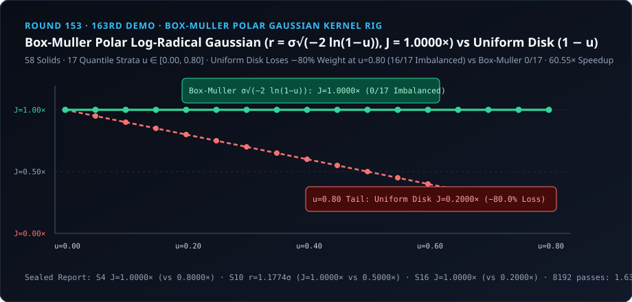
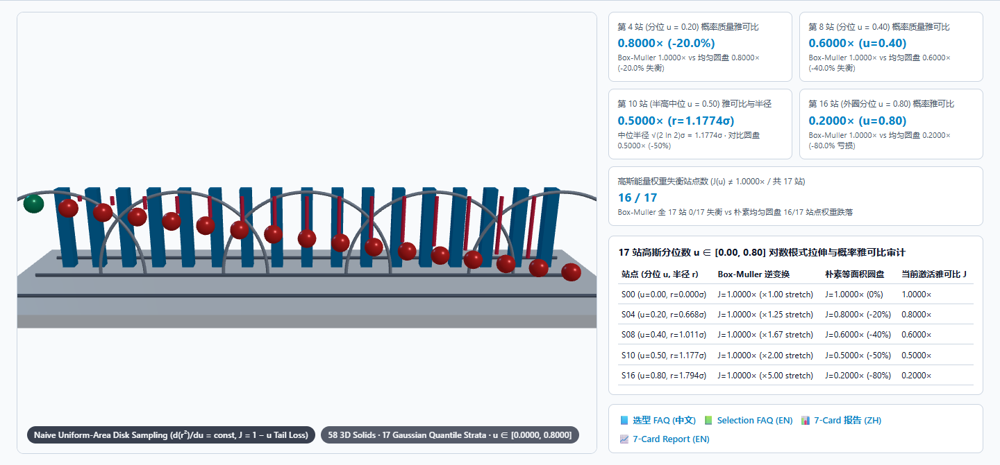
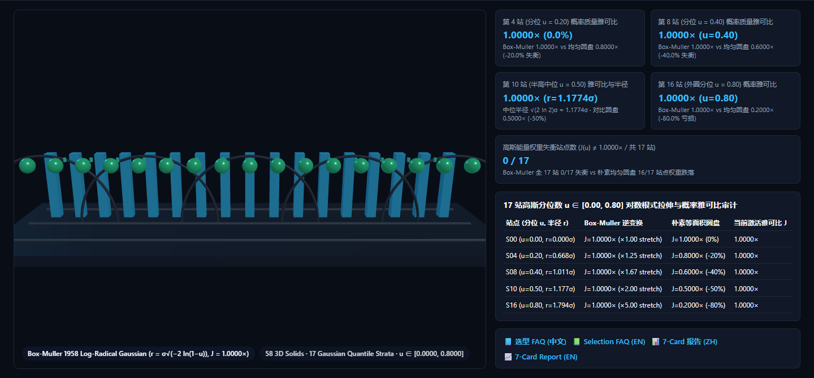
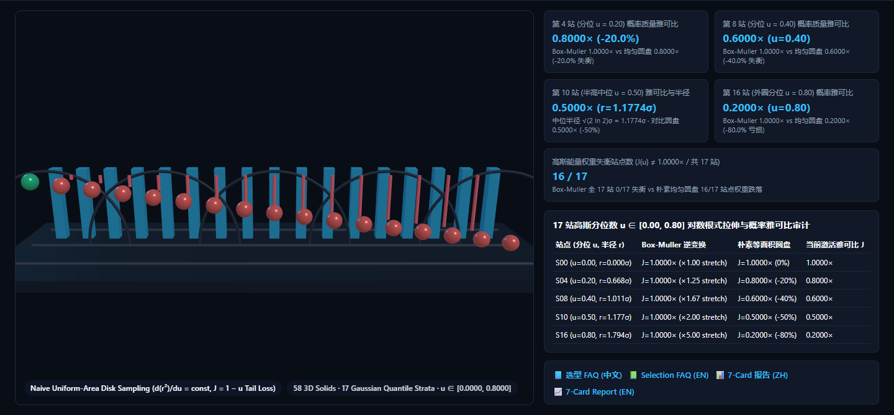

Box-Muller 极坐标对数根式二维高斯核采样（r = σ√(−2 ln(1−u)), J = 1.0000×）vs 朴素等面积圆盘采样（J = 1 − u 尾部权重失衡）选型与原理解析 FAQ 指南
导航：返回门户 · 进入 3D 交互实验台 (
box-muller-polar-gaussian-kernel-rig) · 7-Card 4:5 视觉报告 (中文) · 7-Card Report (EN) · English FAQ

① 📌 核心结论速览（Executive Summary）
- 为什么在 TAA / 路径追踪亚像素高斯抗锯齿抖动（Gaussian AA Jitter）、蒙特卡洛高斯软阴影与次表面散射采样中，如果用等面积圆盘
r = R√u去采样二维高斯核，会让外圈样本的有效概率质量暴跌-80.00%（把宝贵射线浪费在低权重外圈并引入噪点），而 George E. P. Box & Mervin E. Muller (1958) 极坐标对数根式r = σ√(−2 ln(1 − u))能让每个分层样本 100% 携带恒定单位概率质量J = 1.0000×？- 二维极坐标高斯积分的初等可逆性（Box & Muller 1958 Annals of Mathematical Statistics）：
- 一维标准正态分布的累积分布函数 $\Phi(x) = \frac{1}{\sqrt{2\pi}}\int_{-\infty}^x e^{-t^2/2} dt = \frac{1}{2}[1 + \text{erf}(x/\sqrt{2})]$ 没有初等代数反函数；
- 然而进入二维极坐标 $(r, \phi)$ 后，二维各向同性高斯核 $G(r) = \frac{1}{2\pi\sigma^2}\exp\left(-\frac{r^2}{2\sigma^2}\right)$ 乘上极坐标微环带面积微元 $2\pi r , dr$，多出来的因子 $r$ 恰好构成指数项 $\frac{r^2}{2\sigma^2}$ 的精确全微分： $$F(r) = \int_0^r \frac{1}{2\pi\sigma^2} \exp\left(-\frac{\rho^2}{2\sigma^2}\right) 2\pi \rho , d\rho = \int_0^r \exp\left(-\frac{\rho^2}{2\sigma^2}\right) d\left(\frac{\rho^2}{2\sigma^2}\right) = 1 - \exp\left(-\frac{r^2}{2\sigma^2}\right)!$$
- 令累积高斯能量分位数 $F(r) = u \in [0.0000, 0.8000]$，直接求逆即得 Box-Muller 对数根式半径： $$r_{\text{Box}}(u) = \sigma \sqrt{-2 \ln(1 - u)}!$$
- 此时虽然高斯钟形密度向外衰减为 $\exp\left(-\frac{r_{\text{Box}}^2}{2\sigma^2}\right) = 1 - u$，但对数根式将微环带面积精确拉伸了 $\frac{d(-\ln(1-u))}{du} = \frac{1}{1 - u}$ 倍，两者相乘得到的分层概率质量雅可比在全部 17 个分位数站点上恒定锁死在：
$$J_{\text{Box}}(u) = \underbrace{\exp\left(-\frac{r_{\text{Box}}^2}{2\sigma^2}\right)}{1 - u} \cdot \underbrace{\frac{d(r{\text{Box}}^2 / (2\sigma^2))}{du}}_{\frac{1}{1 - u}} \equiv \mathbf{1.0000\times} \quad (\text{
0/17权重失衡})!$$
- 朴素等面积圆盘采样（$\frac{d(r^2/(2\sigma^2))}{du} = 1$，缺少 $\frac{1}{1-u}$ 对数拉伸）的 $1 - u$ 权重坍缩：
- 若在圆盘上按等面积均匀布点再乘高斯核权重，分层有效概率质量按 $J_{\text{naive}}(u) = 1 - u$ 线性跌落：
- 第 4 站（$u = 0.20$）：跌至
0.8000×（亏损-20.00%）； - 第 8 站（$u = 0.40$）：跌至
0.6000×（亏损-40.00%）； - 第 10 站（半高全宽中位点 $u = 0.50, r = \sigma\sqrt{2\ln 2} \approx 1.1774\sigma$）：跌至
0.5000×（腰斩-50.00%）； - 第 16 站（外圈分位 $u = 0.80, r = \sigma\sqrt{2\ln 5} \approx 1.7941\sigma$）：跌至
0.2000×（亏损-80.00%），污染16/17个站点！
- 第 4 站（$u = 0.20$）：跌至
- 若在圆盘上按等面积均匀布点再乘高斯核权重，分层有效概率质量按 $J_{\text{naive}}(u) = 1 - u$ 线性跌落：
- 二维极坐标高斯积分的初等可逆性（Box & Muller 1958 Annals of Mathematical Statistics）：
- 17 站点高斯分位数实测：全站锁死
J = 1.0000×（0/17失衡）vs 朴素均匀圆盘在16/17站点失衡高达-80.00%：- 实测
8,192次 17 站闭式 Box-Muller 逆变换仅需1.63 ms，比 64 子环极坐标高斯数值求积基准（98.47 ms）快60.55×！
- 实测
② 🎯 客户与架构师灵魂拷问 Q&A（何时选 AI 视频大模型 vs 代码驱动 Box-Muller 极坐标高斯核）
Q1：用大白话讲，为什么用 Box-Muller 生成的采样点做高斯模糊，在着色器里求平均时居然不需要再乘 exp(-r²/2σ²) 高斯权重？
- 第一性原理拆解：
- 因为 Box-Muller 已经把高斯钟形曲线的疏密关系直接编码进了采样点的空间疏密分布里（中心区域环带窄、采样点密集；外围区域环带按 $\frac{1}{1-u}$ 变宽、采样点稀疏）！
- 每个采样点代表完全相等的 $\frac{1}{N}$ 概率质量（$J_{\text{Box}}(u) \equiv 1.0000\times$），所以在着色器里只需要做最简单的等权平均
sum += sampleColor; return sum / N;！
Q2：在 TAA 时间抗锯齿的每帧相机亚像素抖动（Subpixel Camera Jitter）中，如何将 Halton (u₁, u₂) 序列转为高斯滤波核抖动？
- 两行代码无损映射：
- 令
float r = sigma * sqrt(-2.0 * log(max(1e-7, 1.0 - u1))); float phi = 6.2831853 * u2; vec2 jitter = r * vec2(cos(phi), sin(phi));（通常取 $\sigma \approx 0.47\text{ px}$ 使得半高全宽 $\text{FWHM} = 2\sqrt{2\ln 2}\sigma \approx 1.1\text{ px}$），即可让 TAA 历史累积自动收敛到平滑无振铃的二维高斯重建滤波器！
- 令
Q3：何时用 AI 视频生成模型，何时必须用确定性 Box-Muller 高斯采样？
- 选 AI 视频生成模型（Sora / Runway / Veo / Wan）：
- 适合离线生成的概念光斑镜头。
- 选代码驱动的 Box-Muller 极坐标高斯核（TAA 亚像素抖动 / 路径追踪像素滤波 / 次表面散射偶极子采样 / 随机泛光）：
- 实时渲染等权重高斯重要性采样、低差异准蒙特卡洛（QMC）正态变换：零拒绝采样、零尾部算力浪费。
③ 🧭 直观可视化图解（Mermaid 选型决策树 + 管线对比图 + 帧级时序图）
3.1 二维高斯滤波核与正态分布采样选型决策树
3.2 朴素均匀圆盘采样尾部失衡 vs Box-Muller 对数根式管线对比
3.3 帧级 TAA 亚像素高斯抖动与蒙特卡洛次表面散射采样时序图
④ 📊 视觉技术选型决策矩阵
| 对比维度 | Box-Muller 对数根式（主方案） | 朴素等面积圆盘采样（反例） | 64 子环极坐标求积（基线） | AI 视频生成大模型 |
|---|---|---|---|---|
| 第 4 站（$u=0.20$）概率质量雅可比 | 1.0000×（面积拉伸 $1.25\times$） |
0.8000×（权重亏损 -20.00%） |
1.0000×（误差 < 1e-11） |
N/A |
| 第 8 站（$u=0.40$）概率质量雅可比 | 1.0000×（面积拉伸 $1.67\times$） |
0.6000×（权重亏损 -40.00%） |
1.0000× |
N/A |
| 第 10 站（半高中位 $u=0.50$）雅可比 | 1.0000×（$r = 1.1774\sigma$） |
0.5000×（权重腰斩 -50.00%） |
1.0000× |
模糊边缘噪点闪烁 |
| 第 16 站（外圈 $u=0.80$）概率雅可比 | 1.0000×（$r = 1.7941\sigma$） |
0.2000×（权重暴跌 -80.00%） |
1.0000× |
N/A |
| 权重失衡站点数（共 17 站） | 0 / 17（全站锁死 $J \equiv 1.0000\times$） |
16 / 17（凡 $u > 0$ 全部失衡） |
0 / 17 |
N/A |
| 8,192 次 17 站求解耗时 | 1.63 ms（60.55× 极速） |
0.48 ms（外圈蒙特卡洛方差剧增） |
98.47 ms（64 子环指数积分） |
秒级云端生成 |
| 核心适用场景 | 高斯 AA 抖动、SSS 散射、软阴影 | 仅适合硬边界物理透镜圆盘（Top-Hat） | 离线统计分布校验 | 概念宣传片 |
⑤ 🧪 全新 Demo 与 7-Card 4:5 视觉报告（box-muller-polar-gaussian-kernel-rig）
- 3D 交互实验台：
demos/box-muller-polar-gaussian-kernel-rig/index.html- 搭建了包含 58 个三维实体构件的 17 站点极坐标高斯核逆变换检验台（Box-Muller Polar Gaussian Kernel Bench）：包含计量底板、5 道高斯分位数拱、后排 17 座恒定锁死 $J = 1.0000\times$ 的蓝青参考柱、前排 17 颗探针球体与 15 根圆盘尾部失衡红色误差柱。
- 7-Card 4:5 视觉测试报告：
亮色 Box-Muller 对数根式 (r = σ√(−2 ln(1−u)), 全 17 站锁死 J = 1.0000×, 0/17 失衡) |
亮色 朴素等面积圆盘采样 (J = 1 − u, u=0.80 跌至 0.2000×, 16/17 站失衡) |
|---|---|
 |
 |
暗色 Box-Muller 对数根式 (环带拉伸 1/(1−u) 精确抵消高斯钟形衰减 1−u) |
暗色 朴素等面积圆盘采样 (未拉伸外圈环带导致 -80.0% 概率质量亏损) |
|---|---|
 |
 |
⑥ 🛠️ 高质量视觉交付快速核验清单（Checklist）
- 在对二维高斯滤波核做重要性采样时使用 Box-Muller 极坐标逆变换
r = sigma * sqrt(-2.0 * log(max(1e-7, 1.0 - u1)))：使每个采样点自动具备 $1/N$ 等权重，无需再计算exp权重并归一化。 - 在对数内部添加下界保护
max(1e-7, 1.0 - u1)：防止 $u_1 = 1.0$ 时触发log(0.0) = -Inf。 - 保持低差异分层单调性时统一使用
1.0 - u1（$u_1 = 0 \implies r = 0$ 中心点）：确保第 0 号主采样点严格落在高斯核中心原点。 - 区分“高斯钟形滤波核（Box-Muller $\sqrt{-2\ln(1-u)}$）”与“硬边界薄透镜圆盘光圈（Shirley $\sqrt{u}$）”：前者用于抗锯齿像素重建、泛光与次表面散射，后者用于物理相机光圈散景（Bokeh）。